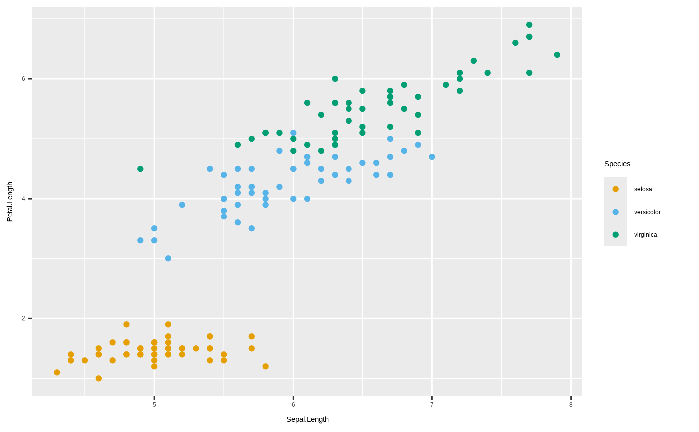
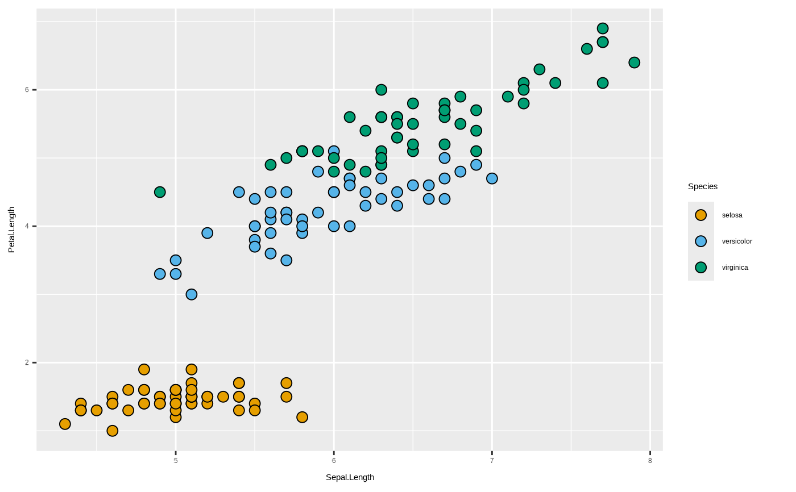

Colorblind-safe categorical color scale
scale_color_obis_cat.RdApplies a discrete, colorblind-safe palette to the color aesthetic.
Three palettes are available:
"okabe_ito"— the Okabe-Ito 8-color palette (default), widely recommended for colorblind accessibility."tol"— Paul Tol's 7-color bright scheme, a good alternative."ibm"— IBM's 5-color colorblind-safe palette (blue, purple, magenta, orange, gold), designed for data visualization on light backgrounds.
Usage
scale_color_obis_cat(palette = "okabe_ito", ...)
scale_fill_obis_cat(palette = "okabe_ito", ...)Arguments
- palette
Character. One of
"okabe_ito","tol", or"ibm". Default"okabe_ito".- ...
Additional arguments passed to
ggplot2::scale_color_manual().
Examples
library(ggplot2)
ggplot(iris, aes(Sepal.Length, Petal.Length, color = Species)) +
geom_point() +
scale_color_obis_cat()

library(ggplot2)
ggplot(iris, aes(Sepal.Length, Petal.Length, fill = Species)) +
geom_point(shape = 21, size = 3) +
scale_fill_obis_cat()
